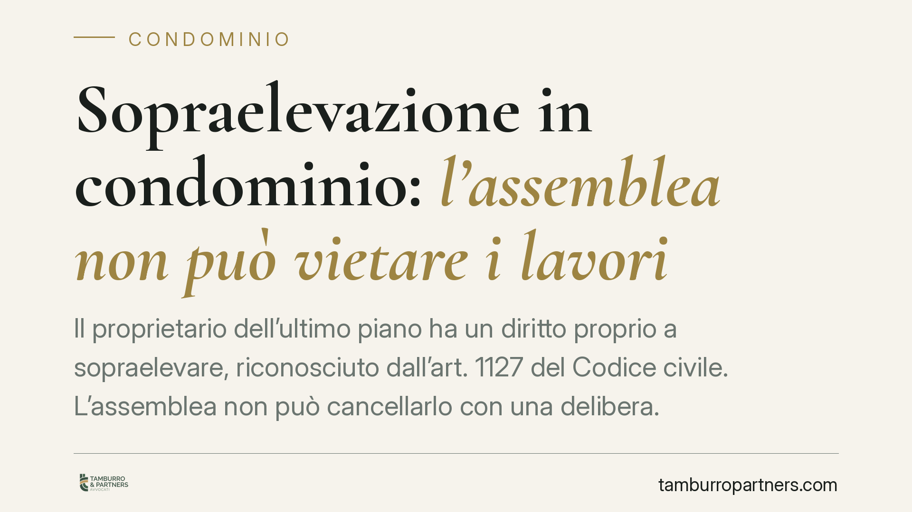

Sopraelevazione in condominio: l'assemblea non può vietare i lavori
Il proprietario dell'ultimo piano ha un diritto proprio a sopraelevare, riconosciuto dall'art. 1127 del Codice civile. L'assemblea non può cancellarlo con una delibera. Restano però limiti precisi — statica, aspetto architettonico, aria e luce — e un'indennità dovuta agli altri condòmini. Vediamo cosa può decidere davvero l'assemblea e come muoversi se la delibera blocca i lavori.

Il diritto di sopraelevare
L'art. 1127 c.c. attribuisce al proprietario dell'ultimo piano (o del lastrico solare esclusivo) la facoltà di sopraelevare, cioè di realizzare nuovi piani o nuove costruzioni sopra l'edificio. Si tratta di un diritto che deriva dalla proprietà dell'unità superiore: non nasce da un voto assembleare e non ha bisogno dell'autorizzazione degli altri condòmini per esistere.
Questo non significa che il proprietario possa costruire liberamente. La norma fissa tre limiti che condizionano l'esercizio del diritto e su cui, in caso di contestazione, decide il giudice, non l'assemblea.
I tre limiti dell'art. 1127 c.c.
Statica dell'edificio. La sopraelevazione non è ammessa se le condizioni statiche dell'edificio non la consentono. È un limite assoluto: se le strutture non reggono il nuovo carico, il diritto si arresta. La verifica è tecnica e va documentata con progetto e relazione di un professionista abilitato.
Aspetto architettonico e decoro. Gli altri condòmini possono opporsi se la nuova costruzione pregiudica l'aspetto architettonico dell'edificio. È un limite valutato caso per caso, in relazione alle caratteristiche estetiche dello stabile.
Aria e luce. I condòmini dei piani sottostanti possono opporsi se la sopraelevazione diminuisce notevolmente l'aria o la luce dei loro piani.
A questi si aggiunge un obbligo economico: chi sopraeleva deve corrispondere agli altri condòmini un'indennità, calcolata secondo i criteri fissati dalla stessa norma e precisati dalla Corte di cassazione a Sezioni Unite (sent. n. 16794/2007). L'indennità è dovuta per il maggior valore acquisito dalla porzione sopraelevata rispetto all'area comune sottostante.
Cosa può (e non può) fare l'assemblea
Su questo punto occorre precisione, perché è facile trarre conclusioni sbagliate.
L'assemblea non può vietare la sopraelevazione con una delibera. Il diritto del singolo non rientra tra le materie che l'assemblea può decidere: una delibera che pretenda di negarlo interviene su un ambito estraneo alle sue attribuzioni.
Questo non trasforma l'assemblea in un soggetto privo di ruolo. Restano di sua competenza, ad esempio, l'approvazione di lavori sulle parti comuni, la tutela del decoro nell'ambito delle sue attribuzioni, la gestione delle spese condominiali connesse. L'assemblea interviene, ma non può usare il proprio potere per azzerare un diritto individuale.
Delibera nulla o annullabile: perché fa differenza
Qui si gioca la partita pratica. Le Sezioni Unite (Cass. SU n. 9839/2021) hanno chiarito la linea di confine:
- sono nulle le delibere prive degli elementi essenziali, con oggetto impossibile o illecito, o che incidono su diritti individuali su cose o servizi comuni o sulla proprietà esclusiva di ciascun condòmino;
- sono annullabili le delibere con vizi di procedura o di eccesso di potere.
La differenza è sostanziale. La nullità può essere fatta valere senza limiti di tempo; l'annullabilità va invece invocata impugnando la delibera entro trenta giorni ex art. 1137 c.c., decorsi i quali la delibera diventa definitiva.
Una delibera che vieti la sopraelevazione tende a collocarsi nell'area della nullità/inefficacia, perché verte su materia sottratta all'assemblea. Ma la qualificazione va valutata sul singolo caso: contano il contenuto esatto della delibera e il tipo di vizio. Nel dubbio, non confidare nella nullità: il rischio è lasciar scadere il termine di trenta giorni e trovarsi la delibera consolidata.
Cosa cambia per chi vuole sopraelevare
Chi possiede l'ultimo piano non deve chiedere il permesso all'assemblea per esercitare il diritto, ma deve rispettare i limiti di legge e i titoli edilizi. Chi teme un pregiudizio (statica, decoro, aria e luce) non può fermare i lavori con un voto: deve rivolgersi al giudice.
Cosa fare in concreto
- Verifica la statica. Acquisisci una relazione tecnica sulla compatibilità del carico prima di avviare qualsiasi progetto.
- Cura il titolo edilizio. Ottieni i permessi urbanistici necessari: il diritto civile non sostituisce l'autorizzazione amministrativa.
- Valuta decoro, aria e luce. Documenta l'impatto architettonico e sui piani sottostanti per prevenire contenziosi.
- Calcola l'indennità. Predisponi la stima del maggior valore, così da offrire agli altri condòmini un riferimento concreto.
- Se ricevi una delibera che blocca i lavori, impugnala nei termini. Anche se ritieni la delibera nulla, valuta con un legale l'impugnazione entro trenta giorni ex art. 1137 c.c. per non perdere la possibilità di contestarla.
Ogni condominio ha una storia a sé.
Se gestisci un'amministrazione e vuoi un confronto su una specifica questione condominiale, scrivi allo studio. Ti rispondiamo entro un giorno lavorativo.